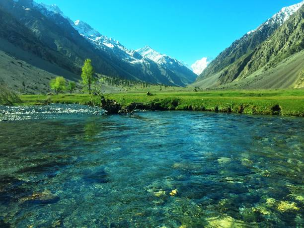
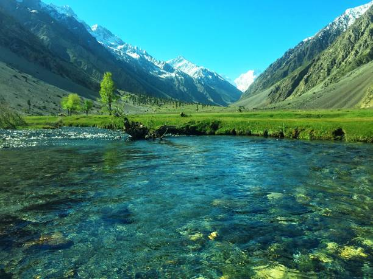

Chitral is situated on the Chitral River in northern Khyber Pakhtunkhwa, Pakistan. It serves as the capital of the Chitral District and before that as the capital of Chitral princely state that encompassed the region until its direct incorporation into West Pakistan on 14 August 1947. It has a population of 49,780 per the 2017 census.
The area which now forms Chitral was reportedly conquered by the Persian Achaemenids and was a part of one of their easternmost satraps.In the third century CE, Kanishka, the Buddhist ruler of the Kushan empire, occupied Chitral. Under the Kushans, many Buddhist monuments were built around the area, mainly Buddhist stupas and monasteries. The Kushans also patronised Buddhist art; some of the finest examples of the image of Buddha were produced in the region under the Kushan rule.
 
